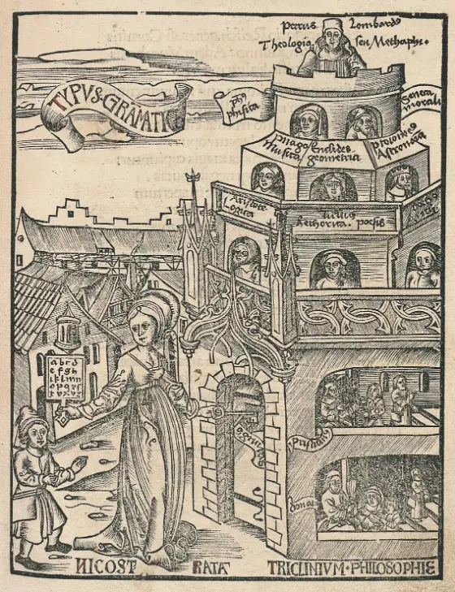

IThe Word
Latin named a meeting of roads by counting them. Where two roads met was a bivium; where three met, a trivium; where four, a quadrivium.1 Mulvium is coined on the same pattern, from multi-, ‘many’, and via, ‘road’: not a road, but the place where many roads meet.
Such places were the public ground of the ancient world. People arriving from different directions met there, traded there, and talked there; what was said at a crossroads was common talk, which is how the Latin trivialis, ‘of the crossroads’, became the English trivial.2 Rome itself was entered from the north at such a place: at the Pons Mulvius, the Milvian Bridge, the roads from Etruria and Umbria crossed the Tiber together.3 The likeness of that name to ours is a coincidence of spelling, not of descent, but a fitting one.
IIThree Roads and Four
The schools of late antiquity and the Middle Ages borrowed these words for a course of study. The seven liberal arts, the arts befitting a free person (liber), were divided between two paths. The trivium held the three arts of language: grammar, logic, and rhetoric. The quadrivium held the four arts of number: arithmetic, the study of number in itself; music, of number in relation; geometry, of magnitude at rest; and astronomy, of magnitude in motion.4
The image of the road was there from the start. Boethius, writing in the early sixth century, called the mathematical arts ‘a sort of fourfold path’ (quodam quasi quadruvio) that the mind must travel to reach philosophy; the name trivium was formed later, in the Middle Ages, to match.5 Six centuries after Boethius, Hugh of Saint Victor explained both names at once:
‘…called by the name trivium and quadrivium, because by them, as by certain ways, a quick mind enters into the secret places of wisdom.’
Hugh of Saint Victor, Didascalicon6
The Middle Ages pictured the arts as women, each holding the tool of her discipline. In the Hortus Deliciarum, compiled for her nuns by Herrad of Landsberg in the twelfth century, Philosophy sits enthroned at the center of a great rose, and seven streams flow out from her to the seven arts around its rim: Grammar with her book and rod, Rhetoric with tablet and stylus, Dialectic, as logic was then called, with the head of a dog, Music with her harp, Arithmetic with a cord of beads, Geometry with compass and measure, and Astronomy with the stars.7

Three centuries later the same course was drawn as a climb. In Gregor Reisch’s Margarita Philosophica, printed at Freiburg in 1503, Nicostrata, who in legend gave Latin its letters, holds out an alphabet to a boy and turns her key in the door of a tower. Its lowest floors teach grammar from Donatus and Priscian. Above them sit Aristotle for logic, Cicero for rhetoric and poetry, and Boethius for arithmetic; then Pythagoras, Euclid, and Ptolemy for music, geometry, and astronomy; higher still, natural philosophy and Seneca’s moral philosophy; and at the top, Peter Lombard, for theology.8

IIIMany Roads
Mulvium keeps the image and widens it. The seven arts were seven roads toward one summit; a mulvium is a meeting place for roads without number. Founders come to it from every field of public benefit—a festival for Beethoven’s bicentennial, a year’s sprint against a disease no laboratory studies, a festival of learning beneath the eclipse at Luxor, a school’s last lectures—each by a road of its own, and each finds the same ground waiting.
What is built at a crossroads serves everyone who arrives, and so it is with what Mulvium offers. Fiscal Sponsorship is the common ground itself: a legal and financial home in which a project can receive gifts, sign its contracts, and stay compliant from its first day. MulviumSOS is the road-building, an operating system with two tools: Atelier, which turns a founder’s idea into an operating institution, and Grove, which makes it known. Oak keeps the talk of the crossroads: it listens to a conversation and keeps only what was meaningful. A fourth road is still being laid.
The liberal arts were called liberal because they belonged to the free: their aim was not a single trade but a whole life. Mulvium’s aim is the same on the scale of institutions: to give a good idea the means of a whole life, whichever road it came by.
IVNotes
- Latin bivium, trivium, quadrivium: a place where two, three, or four roads meet. C. T. Lewis and C. Short, A Latin Dictionary (Oxford, 1879), s.vv.↩
- Latin trivialis, ‘of or belonging to the crossroads’, hence ‘common, commonplace’. English trivial is first recorded in the fifteenth century; its sense ‘of little importance’ dates from the 1590s.↩
- The Pons Mulvius, or Milvian Bridge, carried the Via Flaminia, the road to Umbria, over the Tiber north of Rome; the Via Cassia, the road into Etruria, branched from it just beyond. It is remembered for Constantine’s victory over Maxentius there in A.D. 312.↩
- The division of the four arts by their objects is Nicomachus of Gerasa’s, as Boethius passed it to the Middle Ages: Boethius, De institutione arithmetica, I.1.↩
- Boethius, De institutione arithmetica, I.1. The word trivium, for the three arts of language, is a medieval coinage formed after quadrivium.↩
- Hugh of Saint Victor, Didascalicon (late 1120s), book III; trans. Jerome Taylor, The Didascalicon of Hugh of St. Victor: A Medieval Guide to the Arts (New York: Columbia University Press, 1961).↩
- Herrad of Landsberg, Hortus Deliciarum (c. 1180), fol. 32r. The manuscript was destroyed in the siege of Strasbourg in 1870; its illustrations are known from copies and tracings made earlier.↩
- Gregor Reisch, Margarita Philosophica (Freiburg im Breisgau: Johann Schott, 1503), the woodcut Typus Grammaticae.↩
Plates. Fig. 2: Hortus Deliciarum, Philosophy and the seven liberal arts, colored copy c. 1818; Fig. 3: Reisch, Margarita Philosophica (1503), copy in the Biblioteca Europea di Informazione e Cultura, Milan. Both are in the public domain and reproduced from Wikimedia Commons (Fig. 2, Fig. 3).